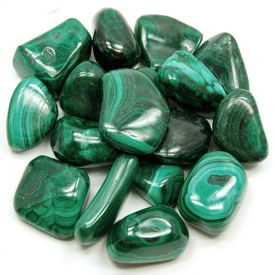

Malachite
Information
Today the most common source of Malachite comes from Africa.
Malachite is the essence of joy and is known as the "stone of transformation" because it helps reveal and heal emotional pain by absorbing the pain into itself. It is especially helpful in bringing ease during times of change and gives the insight needed for personal growth. It’s a stone known to keep blood pressure on the down low and its calming nature certainly helps this. Malachite also works in harmony with the bones.
Health Benefits
You can find here some Healing Properties.
Outfits